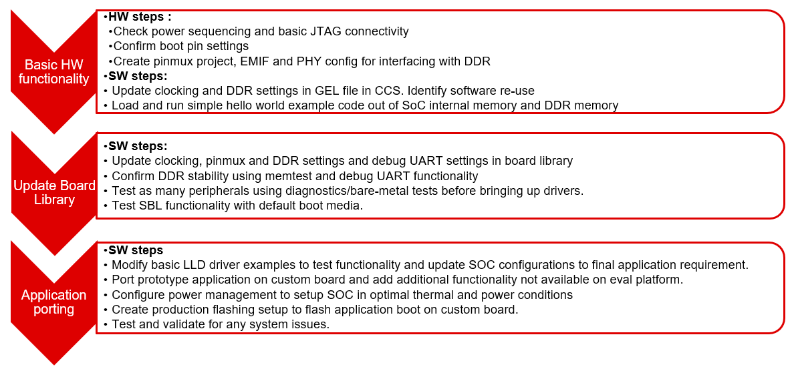

6.1. Board Support¶
6.1.1. Introduction¶
Board library contains a set of general initialization and setup functions that are board-specific. This component includes libraries for boards supported in the SDK release. Refer to the package content for the list of supported boards.Board component also includes diagnostic software.
6.1.1.1. Board APIs¶
The Board_init() API supports initialization of PLL, peripheral clocks, external DDR memory, pinmux and IO Delay configurations. API Reference for application:
#. include <ti/board/board.h>
Example API pseudo code for Board_init() is as follows:
/* Setting up for pinmux and uart */
Board_STATUS ret;
Board_initCfg boardCfg;
boardCfg = BOARD_INIT_MODULE_CLOCK | BOARD_INIT_PINMUX_CONFIG |
BOARD_INIT_UART_STDIO;
ret = Board_init(boardCfg);
6.1.1.2. Board Flash APIs¶
Board library provides flash APIs for the flash devices supported on the TI EVM. This helps to abstract the flash device specific implementation from the applications by providing standard set of APIs across the platforms and flash devices.
6.1.1.2.1. OSPI Flash Tuning¶
Flash library implements a tuning algorithm to arrive at optimal timing parameters to use the OSPI controller in PHY mode.
- Below are the pre-requisites for the PHY algorithm to work properly on TI EVM
PHY tuning pattern needs to be programmed to the OSPI flash. Tuning pattern is provided as part of RTOS SDK - pdk/packages/ti/board/src/flash/nor/ospi/nor_spi_patterns.bin and part of the Uniflash release <Uniflash_Install_Dir>/processors/FlashWriter/<Board_Name>/nor_spi_patterns.bin Tuning pattern should be flashed to last sector of the flash. This is the default location used by the flash library on TI EVM.
Cache should be disabled for the FSS region where tuning data is stored. This should be the FSS data region offset based on the flash size.
Please refer the OSPI Tuning AppNote for more details on tuning algorithm.
6.1.1.3. LLD Dependencies¶
6.1.1.3.1. I2C¶
Application need to configure BOARD_INIT_MODULE_CLOCK option to have I2C operational. I2C is used to read EEPROM data. An I2C handle will be opened in polling mode, and closed after the board ID data is retrieved from EEPROM using Board_getIDInfo_v2() API.
6.1.1.3.2. UART¶
Application need to configure Board_init() with the BOARD_INIT_UART_STDIO option to use the UART stdio API.
After Board_init() completes, application can invoke UART stdio functions such as UART_printf, UART_scanFmt, and etc.
6.1.1.3.3. SCICLIENT¶
Jacinto Board library uses sciclient APIs for configuring the PLL clocks.
6.1.2. Custom Board Addition¶
This section provides the guidelines for creating a custom board library.
Below image shows the recommended sequence to be followed while porting SDK to custom board.
6.1.2.1. Board Configurations¶
Board library supports different SoC and HW board specific configuration functions. Below table shows configurations supported by board library across different platforms.
Board Configuration |
Description |
References |
J721E |
J7200 |
J721S2 |
J784S4 |
|---|---|---|---|---|---|---|
Pinmux |
Configures pinmux for interfaces on the HW board. |
x |
x |
x |
x |
|
SoC Clock Settings |
Enables power domains and clocks for SoC peripherals |
x |
x |
x |
x |
|
DDR Configuration |
Configures DDR/EMIF controller and DDR timing parameters. |
NA |
x |
x |
x |
x |
PLL Configuration |
Configures PLL modules to generate various clocks used by the SoC. |
NA |
x |
x |
x |
x |
Ethernet Configuration |
Configures Ethernet PHYs on the board. |
NA |
x |
x |
x |
x |
IO Instances |
Defines IO instances for HW interfaces. |
NA |
x |
x |
x |
x |
Board Detection |
EEPROM board ID for board detection. |
NA |
x |
x |
x |
x |
Board Flash APIs |
Provides Common APIs for accessing flash devices. |
NA |
x |
x |
x |
x |
SerDes Configuration |
Configures SerDes interface internal muxing and basic setup. |
NA |
x |
x |
x |
Adding custom board library can follow two approaches as mentioned below
6.1.2.2. Creating Board Configurations¶
Before updating the board library with configurations for custom board, it is recommended to use GEL file and CCS for validating the configurations. Follow the steps mentioned below
Update the SoC clock configurations in the GEL file. TI provides Clock Tree Tool to simulate the device clocks.
Update the PLL clock configurations in GEL file if custom board uses a different input clock than the eval platform and/or needs different clock outputs.
Update DDR PHY and timing configurations for custom board.
After GEL file update is complete, connect to custom board using JTAG, run the GEL script to apply the modified configurations and verify the configured values. Load and run simple hello world example out of SoC internal memory and DDR memory.
6.1.2.3. Updating Board Configurations¶
Steps for updating the board library configurations for a custom board is described in this section. Updating some of the configurations may need additional steps based on the platform. Refer Platform Specific Configurations section for more details.
6.1.2.3.1. Pinmux¶
When the BOARD_INIT_PINMUX_CONFIG option is specified, the Board_init() API configures the pinmux for the board. If applicable, it will also configure IO delay values for those device pads, which ensures correct IO timings are met along with the pinmux settings. Refer SOC TRM for additional details.
The pinmux data to be configured is generated by the TI SYSCONFIG tool. Refer to TI SYSCONFIG Tool for more information.
Once the pinmux selection is done, Copy the pinmux tool generated files to your custom board library implementation folder.
Refer Platform Specific Configurations section for more details on the files generated by pinmux tool for different platforms.
6.1.2.3.2. SoC Clock Settings¶
The core clocks and module clocks used on the custom board library may vary based on the power requirements and external components used on the boards.
<Board>_clock.c: Defines functions and structures for configuring the clock and power modules. Update this file based on the data from clock tree tool and GEL file validation.
6.1.2.3.3. DDR Configuration¶
The board library has the correct DDR initialization sequence to initialize the DDR memory on your board. You may need to make changes to the AC timings, hardware leveling, and DDR PHY configuration, some or all of which may be different than the TI supported platforms. GEL file can be used to verify the settings in CCS before modifying the source in the board library.
<Board>_ddr.c: Defines functions and structures for configuring the DDR module. Update this file based on the DDR timing parameters specific to custom board.
6.1.2.3.4. PLL Configuration¶
The SOC board library in the PDK configures the SOC PLL and module clock settings to the nominal settings required to be used with the TI evaluation platform. If you want to use different clock settings due to power consideration, or if you are using a variant of the device that needs to be clocked differently, you can enter the PLL and clock settings in the board library. All of the PLL and module clock settings are consolidated in the following files:
<Board>.c: Contains calls related to all board-level initialization. <Board> refers to the evaluation platform (For example, j721e_evm)
<Board>_pll.c: Defines the Board_PLLInit() function that configures the dividers and multipliers for the clock tree.
6.1.2.3.5. Ethernet Configuration¶
The custom board may have external components (flash devices, Ethernet PHY, etc.) that are different from the components populated on the TI-supported EVM. These components and their support files need to be added to the pdk_xx_xx_xx_xx/packages/ti/board/src/<customBoardName>/device path and linked as part of the board library build.
6.1.2.3.6. IO Instances¶
If your custom board uses an IO instance different from the TI-supported board, the instance needs to be modified in the Pin Mux setup as well as in the board_cfg.h file in pdk_xx_xx_xx_xx/packages/ti/board/src/<customBoardName>/include
6.1.2.3.6.1. Board Detection¶
TI defined board detect mechanism using structure stored in I2C EEPROM
Board Lib APIs read and write Board ID to EEPROM on I2C address 0x50
Application boards, if available, will have their own EEPROM with board information
Structure typically defines:
Board ID (IDK vs GP EVM vs custom)
Revision number (board revision to address board level issues)
Serial Number (internal tracking)
MAC ID (Custom MAC ID use)
Note
Board detection is TI defined mechanism to detect evaluation platform details. This needs to be removed/replicated from board based on customer board implementation. In case board detect mechanism is not used in custom board, check for the Board_getIDInfo_v2() API calls and make necessary changes in the code to avoid dependencies on board detect mechanism.
6.1.2.3.6.2. Board Flash APIs¶
Board library includes a dedicated flash library to abstract the HW flash interface access using a standard set of APIs. In case custom board uses flash devices that are different from eval platform, update to board flash APIs is required. Check the board flash library available at <PDK_INSTALL_PATH>/packages/ti/board/src/flash and make changes required for custom board as needed.
6.1.2.4. Platform Specific Configurations¶
6.1. J721E¶
6.1. Board File Names¶
Board library file names for J721E are different when compared with other platforms in SDK. This is to facilitate the easy migration of board library to custom platforms. Read the file name <Board>.c as board_init.c and <Board>_xxx.c/h as board_xxx.c/h in all the references in above sections.
6.1. Pinmux¶
Follow below steps to update pinmux configuration for custom board on J721E platform. Pinmux project files provided under j721e_evm board folder can be used as reference for pinmux configuration.
Download the pinmux files J721E _pinmux.h and J721E _pinmux_data.c generated by pinmux tool and copy them to custom board folder.
Open ‘packages/ti/board/src/ j721e_evm / j721e _pinmux.h’ and make below modifications.
Change #include “pinmux.h” to #include <ti/board/src/ j721e_evm /include/pinmux.h>
Change #include “csl_types.h” to #include <ti/csl/csl_types.h>
Modify ‘ j721e_evm ‘ in above step if a different name is used for custom board.
Modify the Board_pinmuxConfig() function in ‘packages/ti/board/src/ j721e_evm /board_pinmux.c’ file to remove pinmux configurations specific to EVM addon boards. Look for the comment “Pinmux for Application cards” in the function Board_pinmuxConfig(). All the code after this comment till end of the function and ‘i2cPinmux’ variable can be removed. Board_pinmuxConfig function shall look as below after the update
Board_STATUS Board_pinmuxConfig (void)
{
Board_STATUS status = BOARD_SOK;
/* Pinmux for baseboard */
Board_pinmuxUpdate(gJ721E_MainPinmuxData,
BOARD_SOC_DOMAIN_MAIN);
Board_pinmuxUpdate(gJ721E_WkupPinmuxData,
BOARD_SOC_DOMAIN_WKUP);
return status;
}
Rebuild the board library with new pinmux configurations
Follow additional steps (optional) below to clean-up the TI EVM addon board specific files.
Remove below files from SRCS_COMMON build configuration in ‘packages/ti/board/src/j721e_evm/src_files_j721e_evm.mk’ and remove the files from the board folder ‘packages/ti/board/src/j721e_evm’
J721E_pinmux_data_gesi.c
J721E_pinmux_data_gesi_cpsw9g.c
J721E_pinmux_data_info.c
SerDes Configuration
J721E board library includes SerDes module which configures the SerDes interface internal pinmux to route PCIe, USB and SGMII to different interfaces on the board. If custom board uses similar design, SerDes configurations (board_serdes_cfg.c) can be reused. Otherwise this configuration can be ignored.
6.1.2.5. Creating Board Library with Custom Name¶
6.1.2.5.1. Instructions to add custom Board to the PDK build¶
Follow below steps for creating board library with custom name. AM572x platform is used as reference in the examples wherever needed.
Step 1: Creating new directory for custom board library
In <PDK_INSTALL_PATH>/packages/ti/board/src, Create new directory myCustomBoard and copy files from existing board library package which closely matches your custom board design.
Step 2: Updating names and makefile inside the customBoard package
In <PDK_INSTALL_PATH>/packages/ti/board/src/myCustomBoard, Rename file src_files_<Board>.mk to src_files_myCustomBoard.mk. This file will need a bit of work depending on what elements of board you need for your platform.
Step 3: Adding MACRO based inclusion of updated board_cfg.h corresponding to custom Board
In packages/ti/board/board_cfg.h, add the lines pointing to board_cfg.h file in your customBoard package so that updated peripheral instances and board specific defines can be picked up
#if defined (myCustomBoard)
#include <ti/board/src/myCustomBoard/include/board_cfg.h>
#endif
Step 4: Update top level board package makefile to include build for customBoard Library The makefile is used to include all relevant make files for including Low level driver(LLD), source files relevant to board and the common board.c file
In packages/ti/board/build/makefile.mk, add board.c to the customBoard build:
ifeq ($(BOARD),$(filter $(BOARD),evmAM335x icev2AM335x skAM335x bbbAM335x evmAM437x idkAM437x skAM437x myCustomBoard evmAM572x idkAM571x idkAM572x evmK2H evmK2K evmK2E evmK2L evmK2G iceK2G evmC6678 evmC6657))
# Common source files across all platforms and cores
SRCS_COMMON += board.c
endif
Add board library source files and LLD files to the customBoard build
In packages/ti/board/build/makefile.mk, change
ifeq ($(BOARD),$(filter $(BOARD), evmAM572x idkAM571x idkAM572x))
include $(PDK_BOARD_COMP_PATH)/src/$(BOARD)/src_files_$(BOARD).mk
include $(PDK_BOARD_COMP_PATH)/src/src_files_lld.mk
endif
to
ifeq ($(BOARD),$(filter $(BOARD), myCustomBoard evmAM572x idkAM571x idkAM572x))
include $(PDK_BOARD_COMP_PATH)/src/$(BOARD)/src_files_$(BOARD).mk
include $(PDK_BOARD_COMP_PATH)/src/src_files_lld.mk
endif
Step 5: Update Global makerules
build_config.mk defines the global CFLAGS used to compile different PDK components. Add the following line in the BOARD Specific configurations.
CFLAGS_GLOBAL_myCustomBoard = -DSOC_AM572x -DmyCustomBoard=myCustomBoard
The SOC_AM572x macro ensures that the CSL applicable to this SOC will be included in the build. Use the SoC name that corresponds to the platform of your custom board.
Optional step to update RTSC platform definition If you have a custom RTSC platform definition for your custom board that updates the memory and platform configuration using RTSC Tool then you need to update the platform.mk file that associates the RTSC platform with the corresponding board library
In packages/ti/build/makerules/platform.mk, add the following lines:
ifeq ($(BOARD),$(filter $(BOARD), evmAM572x))
PLATFORM_XDC = "ti.platforms.evmAM572X"
endif
ifeq ($(BOARD),$(filter $(BOARD), myCustomBoard))
PLATFORM_XDC = "evmAM572XCustom"
endif
Note
The SYSBIOS platforms follow the convention to consolidate all platform definitions under SYSBIOS_INSTALL_PATH/packages/ti/platforms/* hence the convention ti.platorms.<platformName> but for custom platform, users are not required to follow this convention.
Step 6: Update source files corresponding to drivers used in board library. src_files_lld.mk file adds source files corresponding to LLD drivers used in the board library. Usually most boards utilitize control driver like I2C (for programming the PMIC or reading EEPROM), UART drivers (for IO) and boot media drivers like (SPI/QSPI, MMC or NAND). In the example below, we assume that the custom Board library has dependency on I2C, SPI and UART LLD drivers. Since the LLD drivers will be linked to the application along with board library, board library only needs <driver>_soc.c corresponding to SOC used on the custom Board.
In packages/ti/board/src/src_files_lld.mk, add the following lines:
ifeq ($(BOARD),$(filter $(BOARD), myCustomBoard))
SRCDIR += $(PDK_INSTALL_PATH)/ti/drv/i2c/soc/am572x \
$(PDK_INSTALL_PATH)/ti/drv/uart/soc/am572x \
$(PDK_INSTALL_PATH)/ti/drv/spi/soc/am572x
INCDIR += $(PDK_INSTALL_PATH)/ti/drv/i2c/soc/am572x \
$(PDK_INSTALL_PATH)/ti/drv/uart/soc/am572x \
$(PDK_INSTALL_PATH)/ti/drv/spi/soc/am572x
# Common source files across all platforms and cores
SRCS_COMMON += I2C_soc.c UART_soc.c SPI_soc.c
endif
Note
For all LLD drivers linked to the board library you need to include corresponding <drv>_soc.c file. For example if you include GPIO driver for setting board mux then GPIO_soc.c needs to be added to LLD source files.
Step 7: Add custom Board to BOARDLIST and update CORELIST
In packages/ti/board/board_component.mk, modify the build to add your custom board and specify the cores for which you want to build the board library. Example to build board library for only A15 and C66x cores, limit the build by specify only a15_0 and C66x in the CORELIST
board_lib_BOARDLIST = myCustomBoard evmAM335x icev2AM335x skAM335x bbbAM335x evmAM437x idkAM437x skAM437x evmAM572x idkAM571x idkAM572x evmK2H evmK2K evmK2E evmK2L evmK2G iceK2G \
#board_lib_am572x_CORELIST = c66x a15_0 ipu1_0
board_lib_am572x_CORELIST = a15_0 c66x
Step 8: Update .bld files for XDCTOOL based build steps.
Make corresponding changes in packages/ti/board/config.bld, by adding the following lines:
var myCustomBoard = {
name: "myCustomBoard",
ccOpts: "-DmyCustomBoard -DSOC_AM572x",
targets: [C66LE,A15LE ]
}
var boards = [ evmAM335x, icev2AM335x, skAM335x, bbbAM335x, evmAM437x, idkAM437x, skAM437x, myCustomBoard, evmAM572x, idkAM571x, idkAM572x, evmK2H, evmK2K, evmK2E, evmK2L, evmK2G, evmC6678, evmC6657 ];
Also, in packages/ti/board/package.bld, add the following line:
Pkg.otherFiles[Pkg.otherFiles.length++] = "src/myCustomBoard/src_files_myCustomBoard.mk";
Step 9: Setup Top level PDK build files to add the Custom board to setup environment.
Final setup involves updating the top level setup file for PDK package to update to setup the build environment to include the custom Board in setup. This can be done by commenting out the top line and adding in the bottom line in <PDK_INSTALL_PATH>/packages/Rules.make:
#export LIMIT_BOARDS ?= evmAM572x idkAM571x idkAM572x
export LIMIT_BOARDS ?= myCustomBoard
Alternative: Invoke the build using command line options to limit the build to specific board, specific SOC and specific CORE. For example, if you want to build the A15 version of board library for AM572x EVM, you can invoke the build using:
gmake board_lib LIMIT_SOCS=am572x LIMIT_BOARDS=myCustomBoard LIMIT_CORES=a15_0
Step 10: Building the custom board with the updated settings
To build package change directory to <SDK_INSTALL_PATH>/<PDK_INSTALL_PATH>/packages, first run pdksetupenv.bat
To make just the board library: gmake board_lib